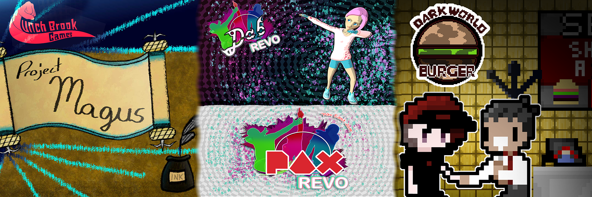
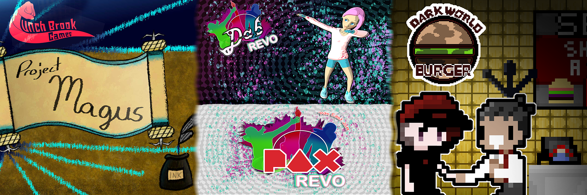

Dab Revo
A music and rhythm game that focuses on self expression and personal style
By Denzel Weatherspoon, Jules Stackhouse, Val Davis, Amanda LeBlanc, Austin Gilbert, Joey Canney, Sam Gomes, TJ Mitchell, and Torrey Wang
Dark World Burger
A JRPG about making burgers and killing everyone
By Lucas Remington, Garrett Bryant, Kristie Morrison, Quintin Connell, Matthew Spillane, James Vasquez, Lucas Acevedo, Sam Gomes, Torrey Wang, and TJ Mitchell
The Magus' Apprentice
An immersive 3D game where players use magic powers to solve puzzles
By AJ Marraffa, Austin Dulong, Jeff Douglas, Micah Souza, Thomas Howley, Tyler LaValley, Garrett Bryant, Val Davis, Dan R. Howard, Michael Lupo, Trevor Martin, Dave Luukkonen, Jonathan Troiano, and Richard Bugg